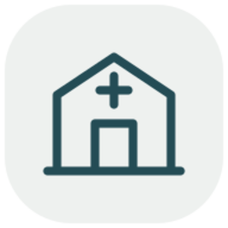

Consulta médica
Información y orientación para su atención.
Hospital Palmas · Cuernavaca, Morelos
Infraestructura especializada y atención humana para acompañarle cuando más lo necesita.
Atención
Acceso claro a las áreas que un paciente o familiar suele necesitar primero.
Información y orientación para su atención.
Atención hospitalaria en un entorno profesional.
Privacidad, acompañamiento y atención continua.
Orientación sobre estudios y disponibilidad.
Encuentre orientación para localizar al profesional adecuado.
Comuníquese directamente con el hospital.
Especialistas
Conozca a nuestros médicos y contacte a su asistente para solicitar una cita.
Próximamente
Pronto podrá consultar los perfiles de nuestros médicos. Mientras tanto, comuníquese con el hospital para recibir orientación.
Llamar al hospitalHospital Palmas
La experiencia digital se diseñó para transmitir lo mismo que la institución: orden, confianza, privacidad y facilidad para contactar al hospital.
Acceso directoTeléfono, WhatsApp y ubicación siempre visibles.
Información claraJerarquía simple, sin saturar al paciente.
Experiencia humanaLenguaje institucional, cálido y profesional.
Servicio hospitalario
94 Blvd. Lic. Benito Juárez, Cuernavaca, Morelos.
Ver ubicación
Instalaciones
Una presentación visual luminosa y limpia pone en primer plano la arquitectura del hospital y mantiene el protagonismo de las letras tridimensionales de Hospital Palmas.
Conocer ubicaciónUbicación